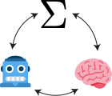

Laboratory of Natural and Artificial Intelligence
We are looking to hire Hiwis, PhD students, and postdocs. Open positions →
We are building an interdisciplinary research group working across machine learning, cognitive science, and computational neuroscience, with the goal of uncovering the computational principles behind intelligent decision-making in both natural and artificial systems. We develop mathematical frameworks, conduct behavioral experiments, and build computational models to explore how psychological constructs such as curiosity, agency, and surprise shape natural intelligence, and how these insights can help us better design, analyze, and interpret modern AI systems. Learn more about our research.

The Laboratory of Natural and Artificial Intelligence (LNAI) will be based at the University of Göttingen, led by Prof. Alireza Modirshanechi, starting this fall.